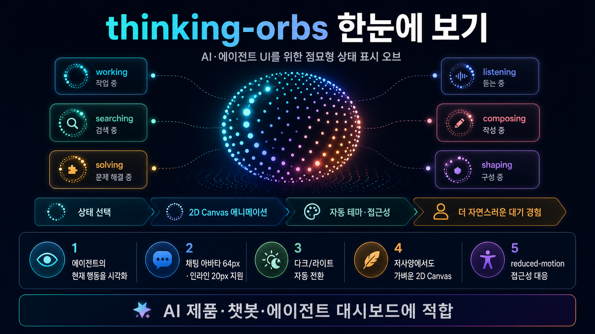

Repository Infographic Reportthinking-orbs
thinking-orbs
저장소 분석
AI·에이전트 UI에 어울리는 “점묘형 생각 오브” 로딩 인디케이터를 React 컴포넌트로 제공하는 작은 패키지입니다. 단순 스피너 대신 에이전트가 지금 무엇을 하는지 상태별 애니메이션으로 보여주는 데 초점이 있습니다.
한 줄 결론: 챗봇·AI 에이전트·생성형 UI에서 “기다리는 시간”을 더 자연스럽게 설명하고 싶을 때 유용합니다.
무엇을 해결하나
일반 로딩 스피너는 “기다려 주세요”만 말합니다. thinking-orbs는 에이전트의 작업 맥락을 working/searching/solving/listening/composing/shaping 여섯 상태로 나눠, 사용자가 현재 흐름을 더 쉽게 이해하도록 돕습니다.
workingsearchingsolvinglisteningcomposingshaping
사용 흐름
1. 상태 선택
state="searching"처럼 작업 의미를 고릅니다.2. 크기 선택채팅 아바타용 64px, 인라인 텍스트용 20px 프리셋을 사용합니다.
3. 테마 자동상위
data-theme, 클래스, OS 테마를 따라갑니다.4. Canvas 렌더WebGL/필터 없이 2D Canvas 점 애니메이션으로 표시합니다.
도입하면 좋은 팀
AI 챗봇응답 생성, 검색, 듣기 등 대화 상태를 더 직관적으로 보여주고 싶은 제품.
에이전트 대시보드작업자가 지금 탐색·작성·해결 중인지 작은 위젯으로 표현하려는 UI.
디자인 시스템브랜드 컬러보다 흑백 잉크형 미니멀 로딩 표현을 선호하는 팀.
강점과 확인할 점
강점
- 상태별 의미가 명확한 6개 애니메이션
- 두 크기가 단순 스케일이 아니라 별도 튜닝
- 접근성: aria-label, reduced-motion 대응
- 비가시/백그라운드 상태에서 자동 일시정지
- npm 패키지와 타입 선언 제공
먼저 확인할 점
- 프로젝트 디자인 톤과 흑백 점묘 스타일이 맞는지
- Canvas 기반 컴포넌트가 SSR/테스트 환경에서 기대대로 동작하는지
- 현재 릴리스가 초기 버전(v0.1.1)이므로 API 안정성을 샘플 화면에서 검증할 것
- 아이콘/브랜드형 로더가 필요한 제품에는 표현 범위가 좁을 수 있음
실전 판단
바로 시험해볼 가치가 있는 저장소입니다. 특히 AI 제품에서 “생각 중” 상태를 더 고급스럽게 보이게 하고 싶지만 무거운 애니메이션 라이브러리나 WebGL은 피하고 싶은 경우 적합합니다. 실제 도입 전에는 자사 채팅 버블, 다크/라이트 테마, reduced-motion 설정에서 64px/20px 모두 확인하는 것을 권장합니다.
빠른 시작
npm install thinking-orbs<ThinkingOrb state="searching" size={64} />근거 확인저장소 README, package.json, 소스 코드, npm 메타데이터를 확인했고
npm run typecheck와 npm run build가 성공했습니다.